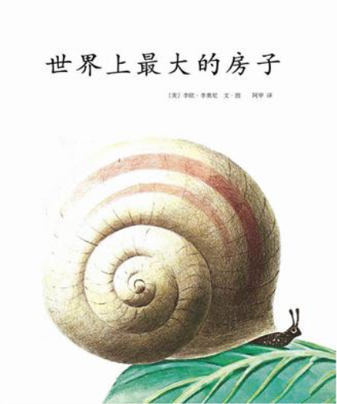 世界上最大的房子  《世界上最大的房子》内容简介：一只小蜗牛梦想着自己背上能有一所世界上最大的房子。可是爸爸告诉他的故事却让他认识到那样沉重的欲望只会成为自己的负担。于是，小蜗牛带着自己小小的壳，走遍了很多地方，欣赏到无数美景。他开心极了，因为自己拥有一个小小的房子。李欧•李奥尼编著的《世界上最大的房子》告诉读者，适合你自己的小房子，就是最好的！ 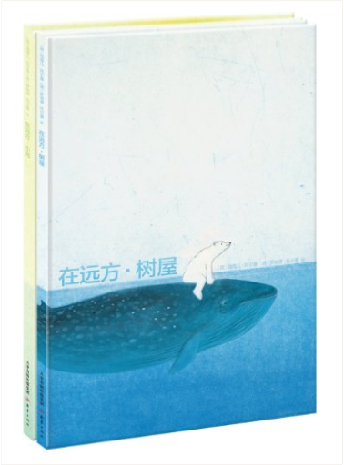 世界精选绘本:在远方系列 《世界精选绘本:在远方系列(套装共2册)》内容简介：“在远方”系列是一套引进自荷兰的无字绘本。没有了文字束缚，读者可以在图画世界中自由地发挥想象。8开的大开本设计，全部以跨页图来展现的图画故事，让读者尽情心让作者别致独特的绘画风格。无论从内容还是形式上来说，这套书都会让你感到眼前一亮。《世界精选绘本:在远方系列(套装共2册)》自上市以来立即获得了全球读者的广泛认可，仅出版3年，版权就已销售至十多个国家。本系列中的《在远方•树屋》还曾获得博洛尼亚国际童书展最佳图书奖、荷兰金画笔奖等众多奖项。 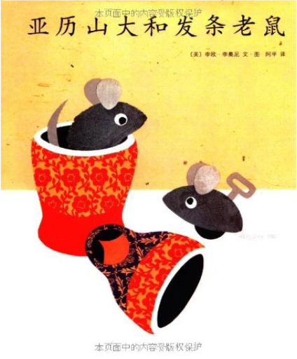 亚历山大和发条老鼠 《亚历山大和发条老鼠》内容简介：小老鼠亚历山大总是被人追打，而他的朋友发条老鼠威利却是小女孩安妮最喜欢的玩具。亚历山大羡慕极了，真希望自己也能变成一只发条老鼠，被人抱着，被人爱。可就在魔法蜥蜴要帮他实现愿望的时候，他却改变了主意…… 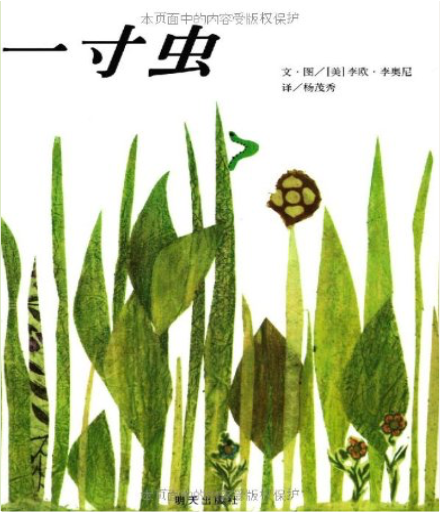 信谊世界精选图画书:一寸虫 《一寸虫》内容简介：一寸虫迷人又可爱！它能量世界上任何东西，从知更鸟的尾巴到巨嘴鸟的喙，统统没问题。饥饿的夜莺威胁着要把一寸虫当早餐吃掉，除非这条虫可以量它的歌。但是歌也能量吗？一寸虫能够运用机智逃过这一劫吗？ 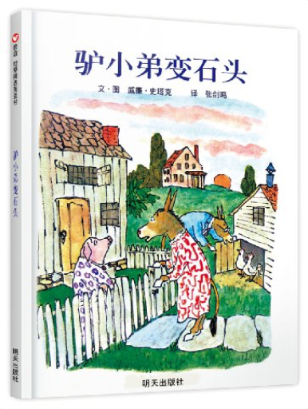 信谊世界精选图画书:驴小弟变石头 《驴小弟变石头(第2版)》内容简介：驴小弟捡到一颗可以实现愿望的小石子。他兴高采烈地带着愿望石回家，却在路上遇到一只凶猛饥饿的狮子，驴小弟吓慌了，心想如果自己是块石头就好了，于是真的变成了一块石头，从此孤零零地躺在荒野上……怎样才能让驴小弟回到爸妈身边呢？隽永的文字和生动的插画，邀请儿童和成人一起思索分离的意义，体验陷入绝境、解难脱困的历程，更让人格外珍惜亲子间牢不可破的情感。 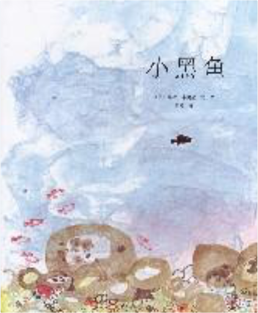 小黑鱼 《小黑鱼》内容简介：在大海的一个角落里住着一群小鱼，大家都是红色的，只有一条是黑色的。有一天，一只凶猛的金枪鱼吃掉了所有的小红鱼，只有小黑鱼逃走了。他孤身一人在海里游荡，遇到了很多稀奇古怪的生命，又高兴起来。小黑鱼又遇到的一群躲在礁石后的小红鱼，为了生存，不再躲避，他想了个好办法，教他们游成大鱼的样子，而自己来当眼睛！就这样，他们在清凉的早晨游，在明媚的中午游，把大鱼都吓跑了。 | 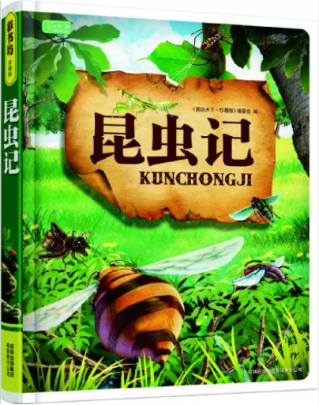 昆虫记 《昆虫记(学生成长必读)》内容简介：从远古的回顾到今天的眺望，如果只选择停留在原点，便永远望不见地平线另一端的模样。成长，是一个过程，如果不能让脚步飞扬，那么就该让思想插上翅膀。童话与故事赐予我们想象，它们是基石，垫高我们迈向前方的脚。当我们把“为什么”变成惊叹号，当我们无畏地闯入大自然的怀抱，成长的轨迹便会向未来伸展成有力的形状。 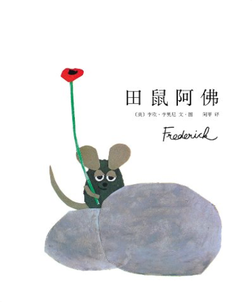 李欧•李奥尼作品集(02):田鼠阿佛 《李欧•李奥尼作品集(02):田鼠阿佛》内容简介：让孩子懂得肯定自己，做最好的自己，《小黑鱼》作者李欧•李奥尼巅峰杰作，被誉为世界绘本领域的里程碑，荣获凯迪克大奖、美国图书馆协会年度好书、《纽约时报》年度最佳绘本。 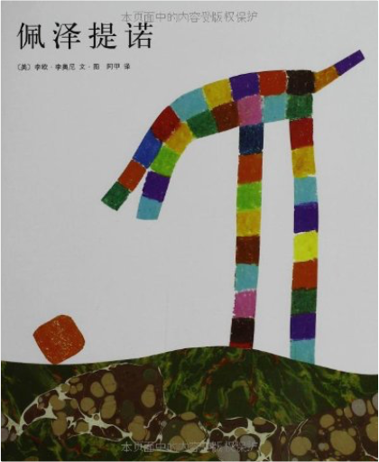 李欧•李奥尼作品集13:佩泽提诺 《李欧•李奥尼作品集13:佩泽提诺》内容简介：佩泽提诺也叫小P，他身边的朋友都是大个子，敢于冒险，做事也很漂亮，而他自己却是个小不点儿，他总觉得自己肯定是什么人身上的一小块儿。有一天，他决定去找到答案。他问了飞毛腿、大块头、游得快、山顶汉，可大家都说小P不可能是自己掉落的一小块儿。后来，住在山洞里的智多星建议小P去砰砰岛寻找答案，于是，小P驾着小船出发了…… 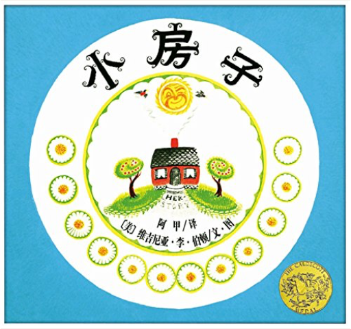 爱心树世界杰出绘本选:小房子 小房子每天站在山冈上看风景，除了日月星辰和四季的变化，小房子还看到乡村的景物随着挖马路、开商店、盖高楼、通地下铁……而一点一点地改变。结果，小雏菊和苹果树不见了，取而代之的是都市的乌烟瘴气和行色匆匆的人们。还好，小房子的主人的后代发现了小房子，把她移到了乡下，她又可以静静地欣赏大自然的风景了。 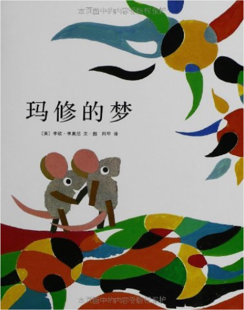 爱心树绘本馆213:玛修的梦 《爱心树绘本馆213:玛修的梦》写了：小老鼠亚历山大总是被人追打，而他的朋友发条老鼠威利却是小女孩安妮最喜欢的玩具。亚历山大羡慕极了，真希望自己也能变成一只发条老鼠，被人抱着，被人爱。可就在魔法蜥蜴要帮他实现愿望的时候，他却改变了主意……  《爱心树绘本馆216:一只奇特的蛋》写了：哥尼流是一只直立着身子走路的高大鳄鱼，可就因为这样他遭到了大家的排斥。于是，他离开了家。途中，他向一只猴子学习了倒立和用尾巴倒挂在树上的技巧。  《蒂莉和高墙》内容简介：从老鼠们开始记事时起，那堵墙就一直立在那里。他们从来没去注意过它，也从没想过问一问，墙的另一边是什么样的。只有年纪最轻的那只小老鼠蒂莉，总是琢磨着墙的另一边到底有一个怎样的世界，并下定决心一定要去那一边看看。她带领着朋友们往上爬，用铁钉钻，沿着墙向尽头走，可是都没有成功。后来，蒂莉受到蚯蚓的启发，想到了一个好办法。就这样，蒂莉终于看到了墙那边的世界。 |

于儿的书架
Collection Total:
114 Items
114 Items
Last Updated:
Sep 6, 2017
Sep 6, 2017
 Made with Delicious Library
Made with Delicious Library